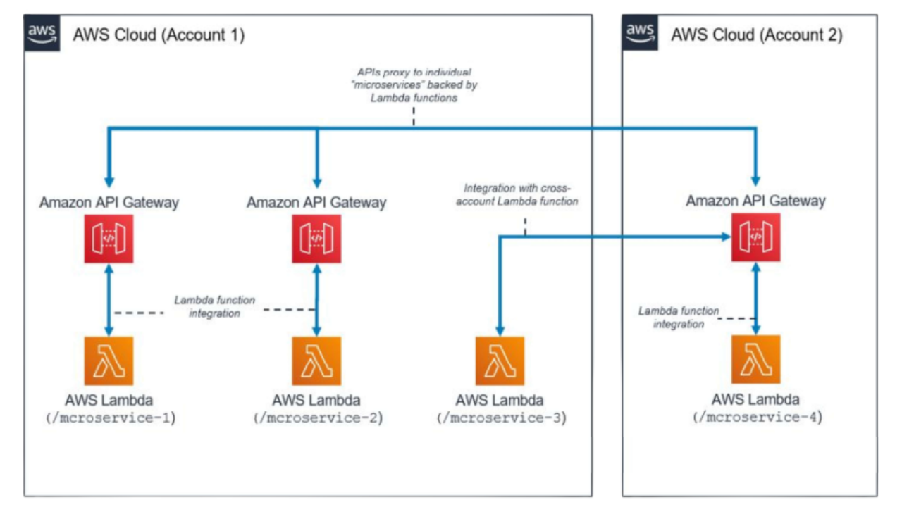

A Arquitetura Serverless representa uma evolução no modelo de cloud computing. Neste estilo, a criação e execução de módulos que compõem o sistema são abstraídas, não sendo necessário o gerenciamento dos servidores.
O Serverless é inerentemente altamente escalável, pois o provisionamento, escalonamento e manutenção dos servidores são responsabilidade da nuvem hospedeira, e não do time de desenvolvimento.

Os Dois Modelos do Serverless
A arquitetura Serverless se manifesta em dois modelos principais:
1. Funções como Serviço (FaaS)
- Definição: Funções isoladas que são executadas sob demanda em resposta a eventos (como requisições HTTP, alterações em DB ou mensagens).
- Exemplos: AWS Lambda, Google Cloud Functions, ou Azure Functions.
2. Backend como Serviço (BaaS)
- Definição: Serviços prontos e gerenciados para funcionalidades específicas, como autenticação, banco de dados (DynamoDB, Firestore) e armazenamento de arquivos (S3).
- Exemplos: Firebase, Supabase ou AWS Amplify.
Vantagens Chave
- Custo-Eficiência: Você paga apenas pelo tempo de execução do código e pelos recursos usados (pay-per-use), sem custos fixos para manter servidores ociosos.
- Escalabilidade Automática: A infraestrutura ajusta automaticamente os recursos para atender à demanda (desde picos altos até baixa atividade).
- Foco no Negócio: Redução de sobrecarga operacional, pois não é necessário configurar, monitorar ou atualizar servidores manualmente. O time foca na lógica do negócio.
Um exemplo prático é o caso da Coca-Cola, que alcançou uma redução de 40% nos custos com infraestrutura ao migrar para uma arquitetura Serverless na AWS.
Desvantagens e Desafios
- Cold Starts: As funções serverless podem demorar mais para responder na primeira execução após ficarem inativas (adormecidas) para economizar recursos.
- Dependência de Provedor (Vendor Lock-in): Pode ser difícil migrar sua aplicação para outro provedor, pois muitos serviços utilizam APIs e extensions específicas (ex: AWS Lambda).
- Debugging Complexo: A natureza distribuída da arquitetura pode tornar o rastreamento de problemas e a leitura de logs de diferentes serviços mais complexa.
4. Serverless vs. Microservices
| Aspecto | Microserviços | Serverless (FaaS) | Relação |
|---|---|---|---|
| Unidade Lógica | Serviço | Função | Uma função pode ser vista como o "menor tipo" de microserviço |
| Infraestrutura | Containers (gerenciados por você) | Funções (gerenciadas pela nuvem) | Serverless abstrai a infraestrutura |
| Escalabilidade | Manual ou via orquestrador (ex: Kubernetes) | Automática por evento | Serverless é mais granular |
| Estado | Pode ser stateful (banco acoplado) | Stateless (dados externos) | Funções precisam reconstituir o contexto a cada execução |
| Comunicação | REST, gRPC, mensageria | Event-driven (filas, tópicos, gatilhos) | Serverless é fortemente orientado a eventos |
| Custos | Instâncias 24/7 | Pagamento por execução | Serverless é mais econômico para baixa demanda |
| Observabilidade | Log centralizado (ELK, Prometheus) | Logs distribuídos (CloudWatch, Stackdriver) | Difícil rastrear em Serverless |
| Gerenciamento | DevOps / SRE | Cloud provider (AWS, GCP, Azure) | Serverless delega a operação à nuvem |
Fonte Principal e Agradecimento: Este artigo foi construído com base nos conceitos, exemplos e diagramas discutidos na disciplina de Arquitetura de Software do curso de Engenharia de Software da UFC/Quixadá, ministrada pelo Professor Sidartha Carvalho.